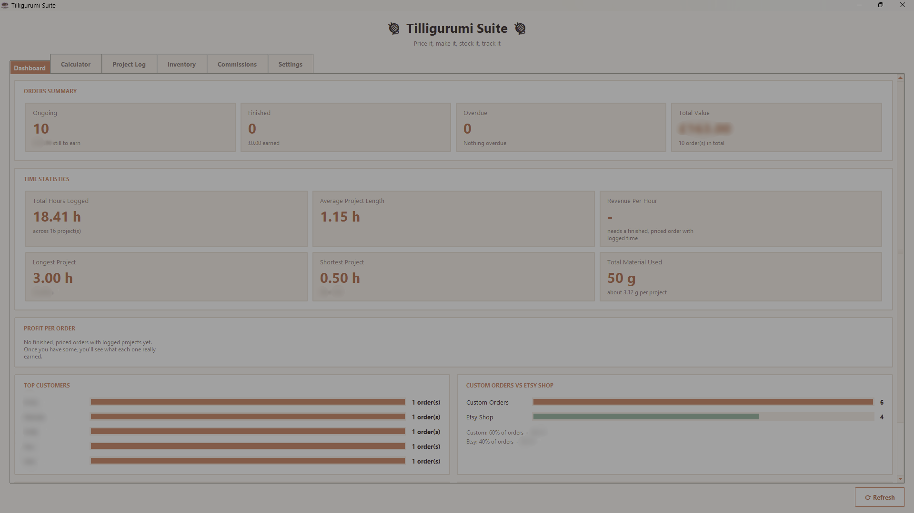
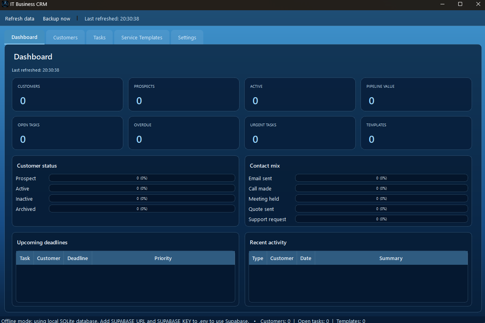

Consultoría informática
Asesoramiento práctico sobre las herramientas y sistemas que encajan con tu negocio, explicado con claridad.
De la idea a la solución
Consultoría informática y software a medida, diseñados en torno a tu forma de trabajar.
Atlante Systems combina consultoría informática, desarrollo de software e innovación técnica para crear soluciones que hagan la tecnología más sencilla, más accesible y más útil. Nuestro trabajo abarca software de gestión empresarial, automatización, aplicaciones de escritorio, plugins y modificaciones para videojuegos, y sistemas a medida diseñados según las necesidades únicas de cada cliente.
Tanto si necesitas asesoramiento, una herramienta hecha desde cero o quitarte de encima una tarea repetitiva, podemos ayudarte.
Asesoramiento práctico sobre las herramientas y sistemas que encajan con tu negocio, explicado con claridad.
Software de gestión, aplicaciones de escritorio y sistemas a medida diseñados en torno a tus procesos.
Quitamos de tus manos las tareas repetitivas y propensas a errores para que dediques tu tiempo a lo importante.
Plugins y modificaciones que amplían y personalizan los juegos de tu comunidad.
Software de gestión todo en uno para negocios artesanales y de amigurumi: sabe cuánto cuesta realmente cada proyecto y cuánto gana realmente cada pedido.

Un CRM de escritorio para empresas de TI, con Supabase y modo sin conexión: gestiona clientes, historial de contactos, tareas y plantillas de servicios reutilizables, con panel de estadísticas y copias de seguridad diarias en JSON.

Atlante Systems desarrolla activamente nuevas herramientas de software y soluciones para empresas. ¿Tienes una idea que debería existir? Hablemos.
Para consultas, oportunidades de colaboración o soporte de software, escríbenos. Nos encantará saber en qué estás trabajando.
atlantesystemsofficial@gmail.com